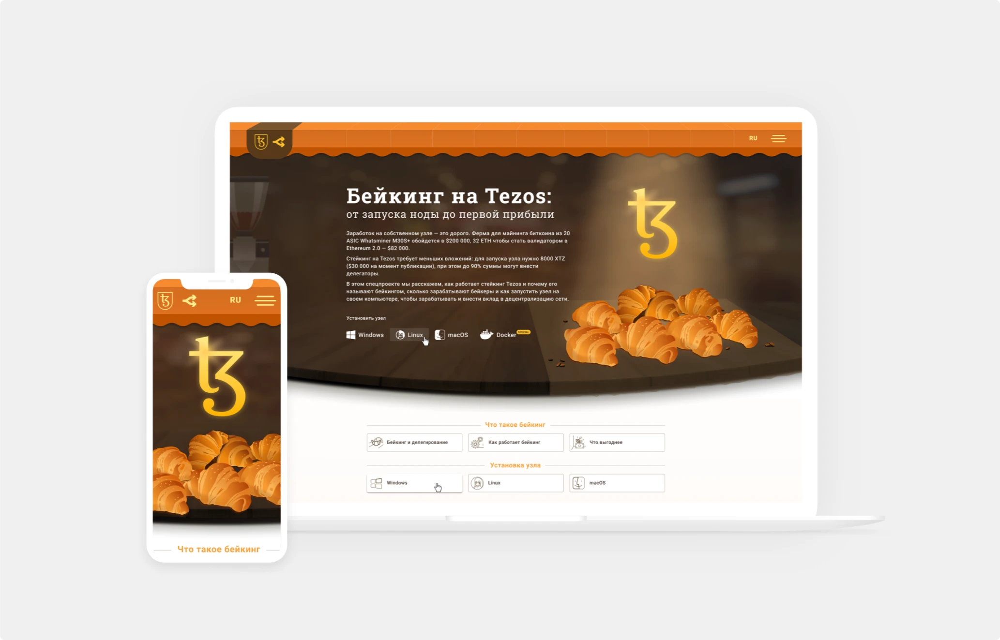

The main brief was to create a landing page that would serve as a branded content
for Tezos Ukraine on online-magasine forklog.com. Baking on Tezos was the main theme
of the project.
The aim was to tell that baking on Tezos is simple, safe and more profitable than
delegation. Describe the benefits of baking.

Need something similar?
Let's work together >>